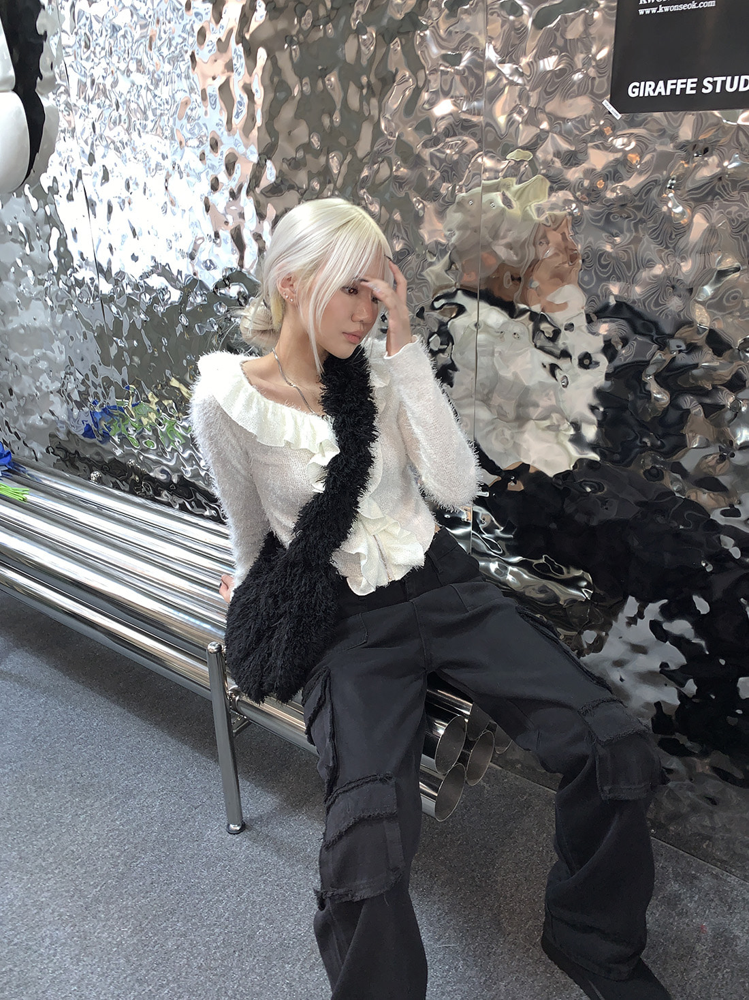

FASHION · BEAUTY · LIFESTYLE
About Me ♡
I’m Eyleen, a Parsons MPS Fashion Management graduate and USC Sociology alum interested in the ideas, people, and stories that make a brand matter.
I’m drawn to fashion and beauty because they sit at the intersection of culture, identity, creativity, and business. I like figuring out what makes people stop, look twice, and actually care about a brand.
My experience in PR, merchandising, e-commerce, and content has taught me to think about both sides of the conversation: what a brand wants to say and what an audience wants to hear.

EDUCATION
University of Southern California
B.A. Sociology
2018–2023 · 3.5 GPAParsons School of Design
M.P.S. Fashion Management
2025–2026 · 3.85 GPAEXPERIENCE
PR · Fashion · Beauty · Lifestyle
At AZIONE PR, I supported media research, creator research, press outreach, gifting, coverage tracking, reporting, brand audits, and event logistics across fashion, beauty, and lifestyle clients.
I’ve also explored merchandising, e-commerce, and brand-side work, giving me a broader understanding of how ideas move from strategy to execution.
MY POV
My sociology background taught me to pay attention to people and culture. Parsons taught me to understand fashion as an industry and a business. PR taught me how brands communicate.
Creating content has added another perspective: I understand what it feels like to be on the audience side, too. I’m interested in the space where culture, creativity, and communication meet.
WHY ME?
I’m not looking to simply check off tasks. I want to understand the brand, find the story, and help make people care about it.
I bring fashion industry knowledge, hands-on PR experience, a creator perspective, and a genuine curiosity about what makes brands culturally relevant.
Give me the story. I’ll help make it matter. ♡